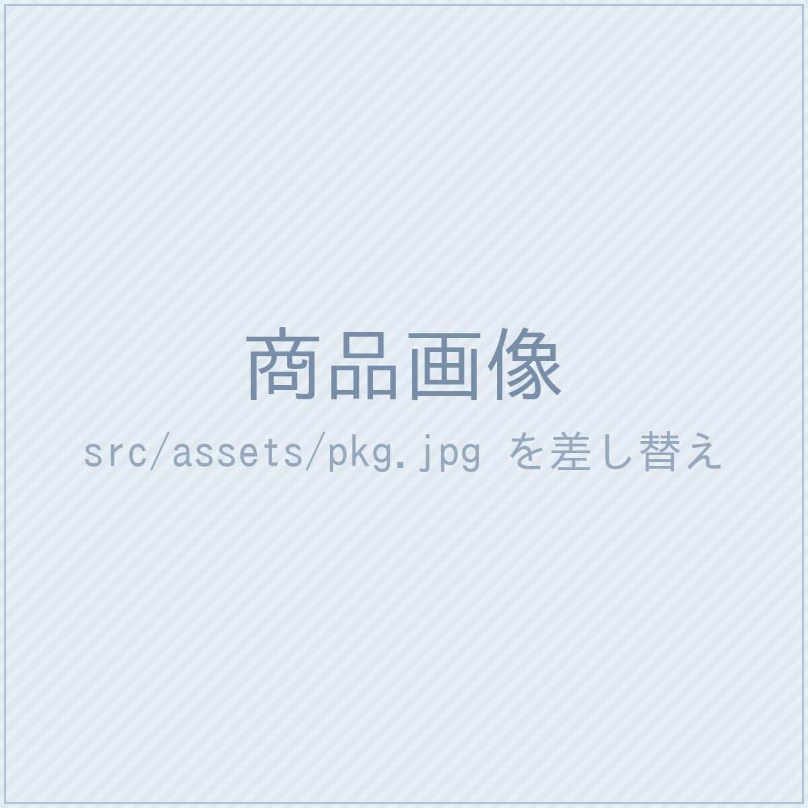
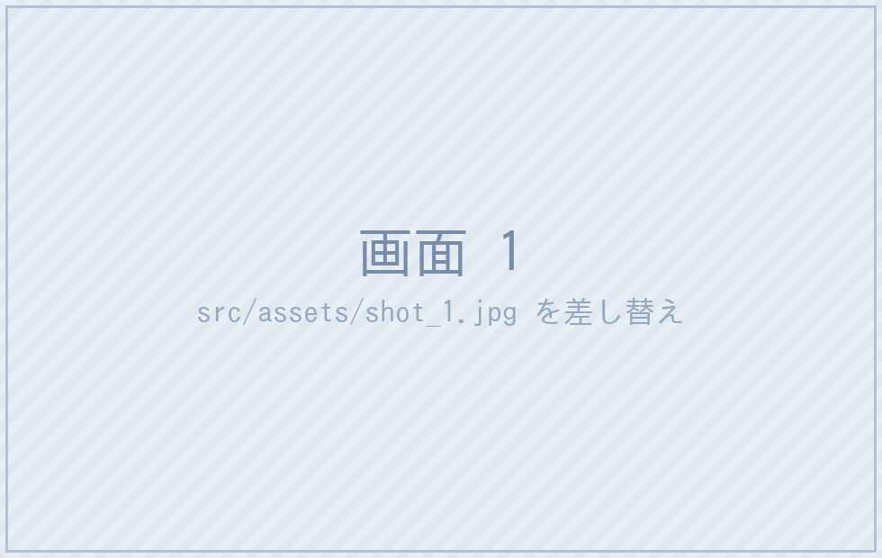
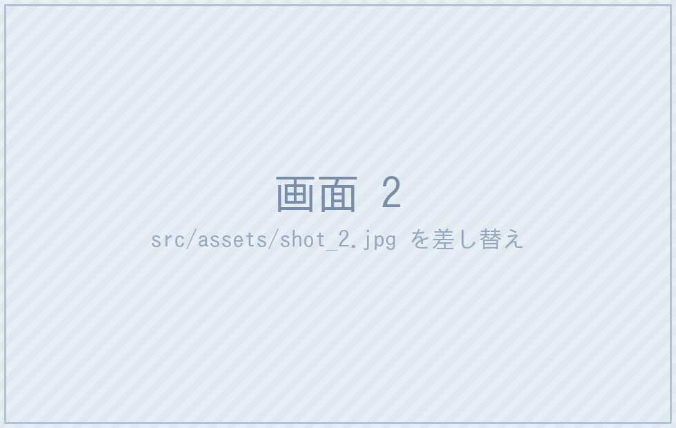
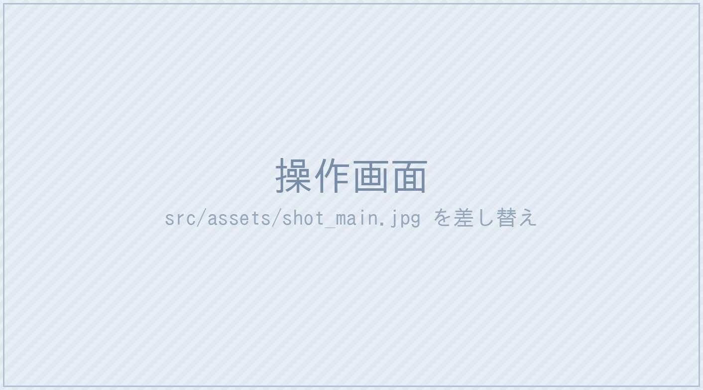

ここに短い問いかけ、
二行で。
✕
できない悩み その1
✕
できない悩み その2
✕
できない悩み その3
✕
できない悩み その4

BRAND
商品名
Ver.0
EDITION
特長1
特長2
特長3
特長4
特長5
＋α
小見出しをここに
主な用途は、だいたい
これ
で足りる。

1
機能その1
何ができるかを一文で。二行に収める。

2
機能その2
何ができるかを一文で。二行に収める。
3
機能その3
何ができるかを一文で。二行に収める。
4
機能その4
何ができるかを一文で。二行に収める。
この版だけの機能
いちばんの差を、
短く言い切る
。
補足を一行か二行で。
言い訳がましくならない範囲で。

ここが差
この版だけの機能
短い対句で。
印象に残す
。
要素1
一行で説明する
要素2
一行で説明する
要素3
一行で説明する
要素4
一行で説明する
新機能
変化を、
一息で
言う。
何がどう変わるのかを一行で
1
手順1
短く説明する
›
2
手順2
短く説明する
›
3
手順3
短く説明する
コストの考え方
他は、毎年払う。
これは、
1回だけ
。
毎年払う方式
使い続けるかぎり支払いが続く
VS
この商品
支払いは最初の1回だけ
商品名
Ver.0
EDITION
実績1
何の数字か
※1
実績2
何の数字か
※2
実績3
何の数字か
※2
対応環境
数量・台数
提供形態